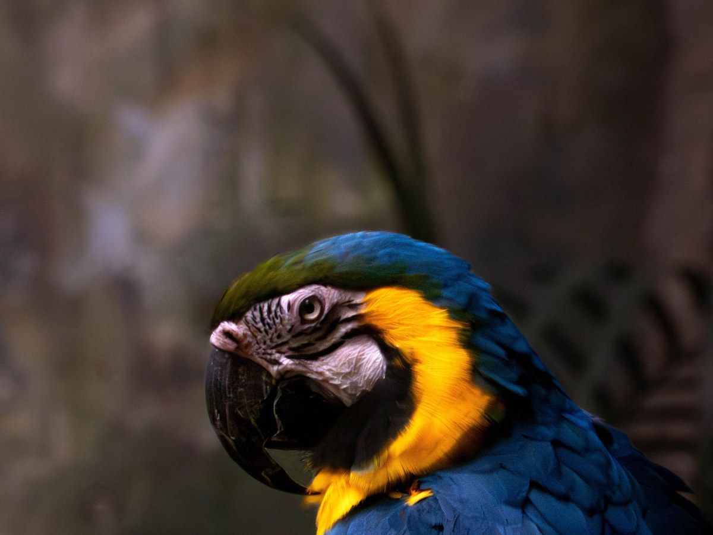
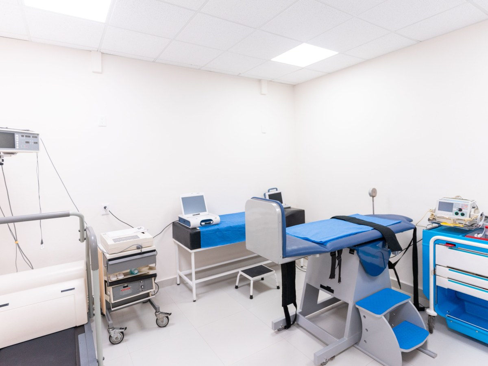
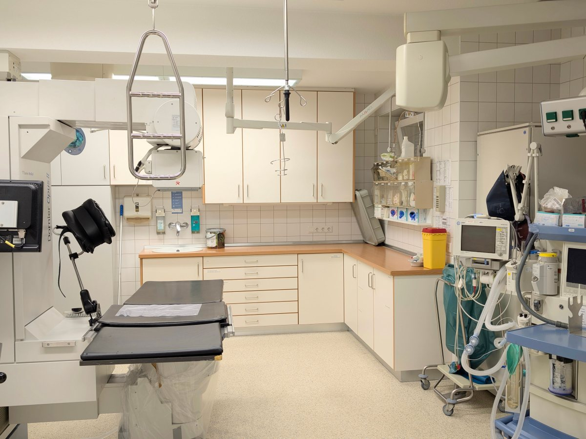
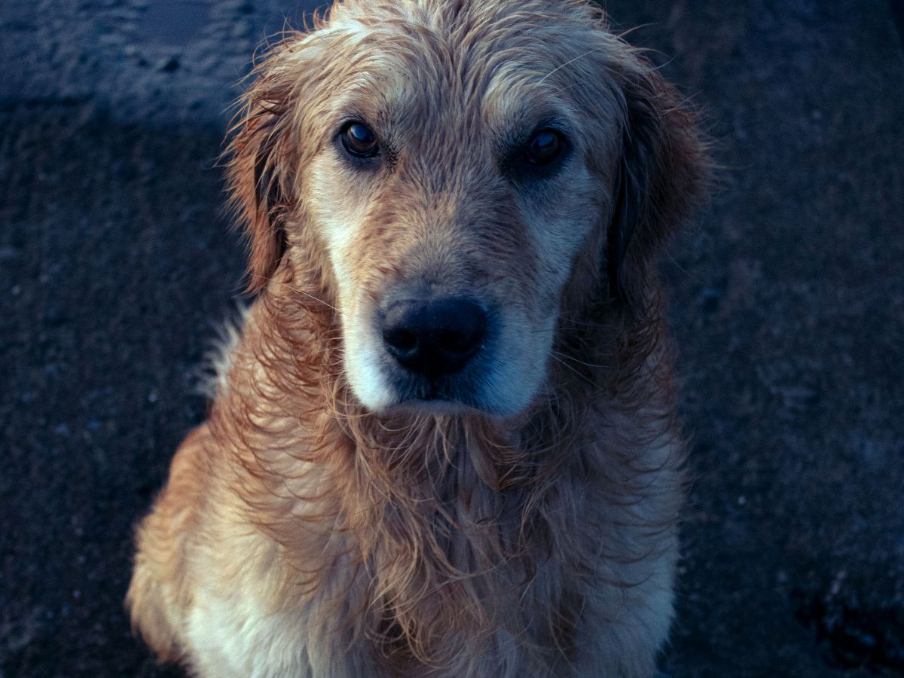
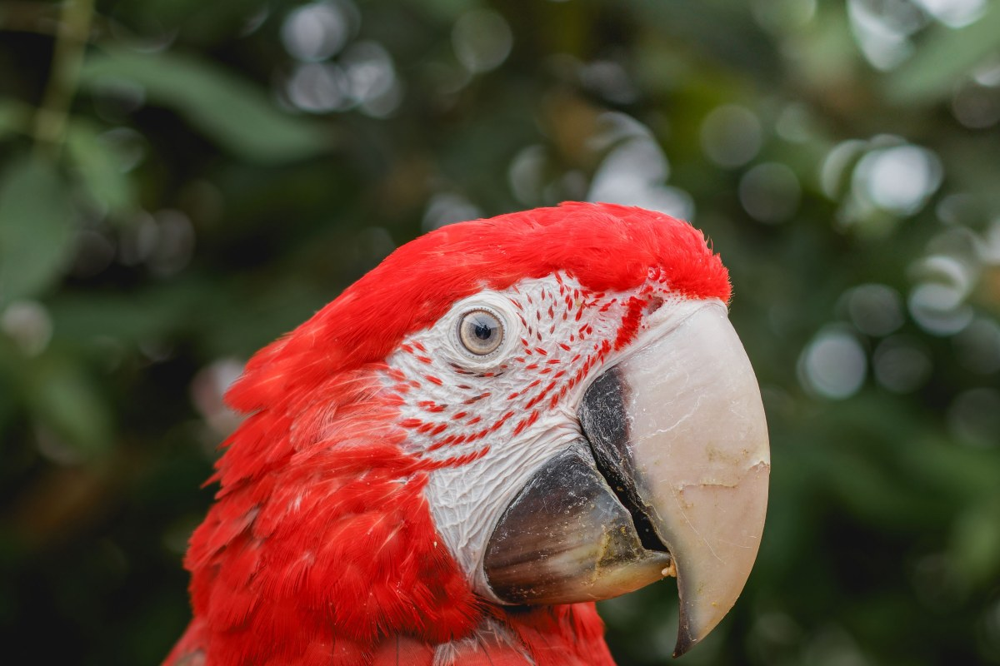
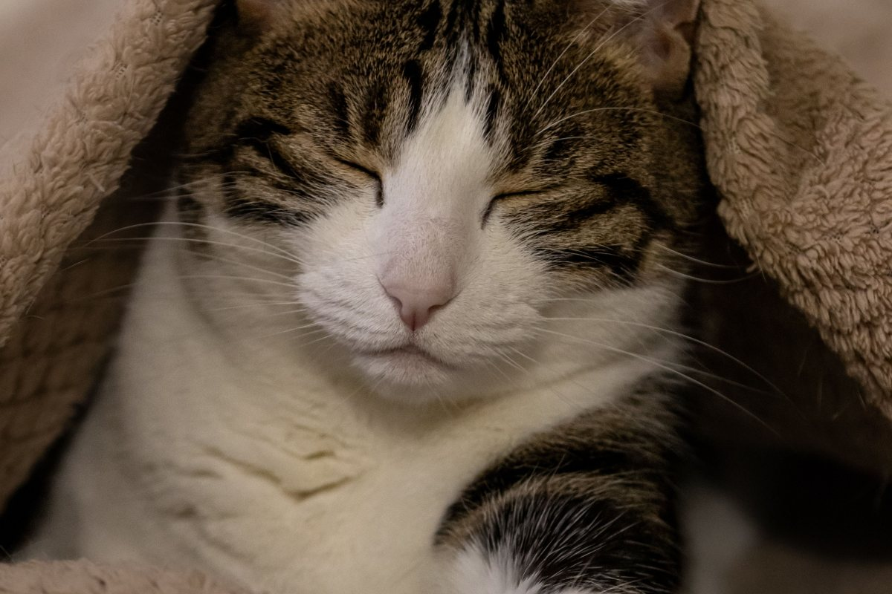
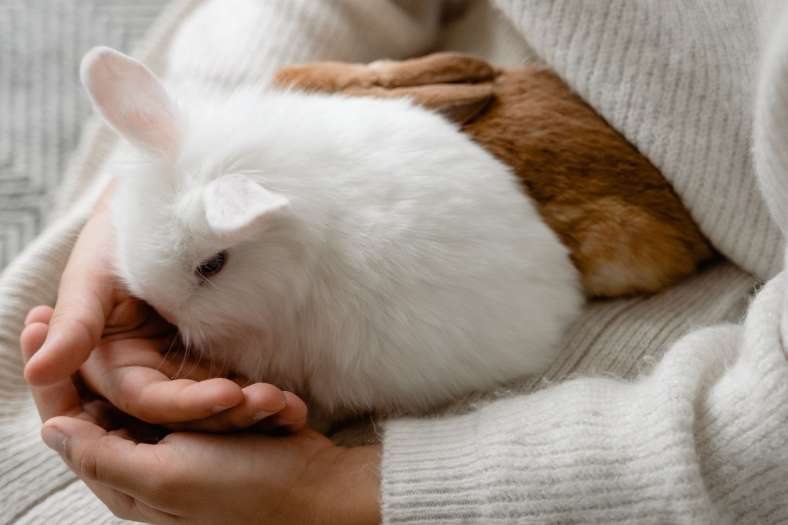

Osorno · Patricio Lynch y Zenteno
Dos sedes para su mascota.
Consulta, exóticos, laboratorio y pet shop en Osorno.
- 378reseñas en Google
- 2sedes en Osorno
- 20años atendiendo mascotas
- 0páginas propias: la agenda vive en Skedu
Antes de salir de la casa
¿A qué sede voy?
Dos direcciones, dos horarios distintos.
- CENTRO
Patricio Lynch 1462
Lun, mar y jue 9:30–18:30; mié y vie desde 10:30; sáb 10–14.
- ZENTENO
Zenteno 2748
Lunes a sábado, 10–14 y 15–19.
- EXÓTICOS
Conejo, ave o reptil
Atienden exóticos: pregunte en qué sede.
- EXAMEN
Si necesita laboratorio
Resultados en menos de una hora.
Horarios de su agenda en Skedu; los domingos no atienden.
Veinte años cuidando mascotas.
En Osorno
Lo que hay en Mundo Animal
-

Lo que la distingue
Animales exóticos
Y dermatología como especialidad.
-
Rápido
Laboratorio
Resultados en menos de una hora.
-

Por dentro
Ecografía
En la misma clínica.
-

Con anestesia inhalatoria
Cirugía
Y hospitalización.
-

Aseo
Peluquería y baños
Baños sanitarios incluidos.
-
Al salir
Farmacia y pet shop
Alimento, juguetes y accesorios.
Servicios de su ficha publicada; qué se hace en cada sede lo confirma la clínica.
378 reseñas en Google.
Una de las clínicas más comentadas de Osorno
Pelo, pluma y huella
Un día en la clínica




Fotos de referencia: los pacientes de verdad están en su Instagram.
Dónde estamos
Patricio Lynch 1462, Osorno
- Sede centro
- Patricio Lynch 1462, local 8
- WhatsApp centro
- +56 9 6557 8489
- Sede Zenteno
- Zenteno 2748
- WhatsApp Zenteno
- +56 9 9000 4454
Horas en su agenda en línea o al fijo (64) 220 1414.
Patricio Lynch 1462, Osorno Abrir en Google Maps
Para el dueño
Qué es real y qué falta
Lo verificado
Las dos sedes, sus horarios y WhatsApp de Skedu, los servicios de su ficha y las 378 reseñas.
Lo de ejemplo
Las fotos: ninguna es de la clínica.
Lo que falta
Si hay urgencias, qué atiende cada sede y fotos del equipo.